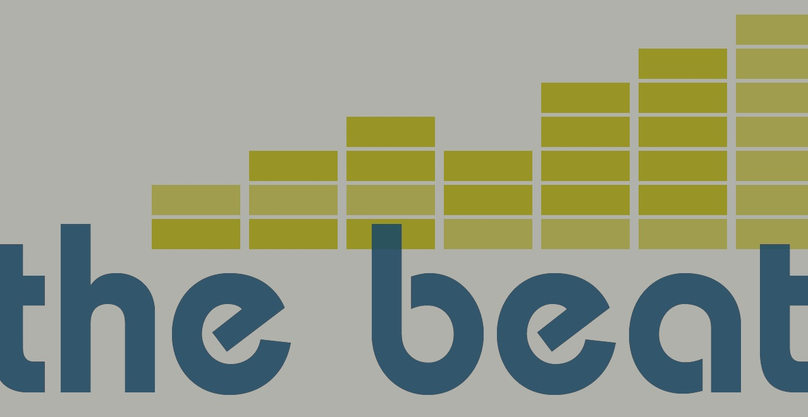
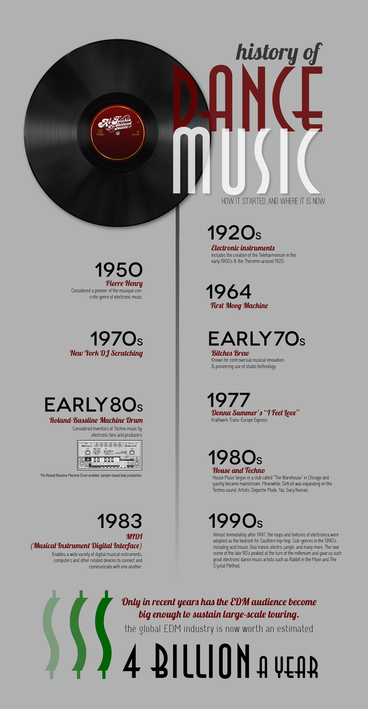

Electronic dance music is a $4 billion per year industry that can trace its roots back to genres ranging from disco to hip-hop. Learn more about how synthesizing sounds electronically has fostered a movement - and where it's going next.
Electronic dance music isn't your granddaddy's swing jam. The genre's heavy bass and layered rhythms have found their way into commercials, top-40 charts and even modern dance culture.
"At this day and age, I'd consider most music to be electronic,"
says Drishay Menon, a Chicago DJ who runs
The Music Binge, a music blog.
Menon says electronic music can be anything created electronically, but that people have a specific image in their mind when they hear the term. That image, he says, is usually dubstep or "brostep," which he says is not an accurate representation of the industry.
The electronic dance music movement had a late start in the United States compared to in Europe. But in 2011, electronic music festivals in Las Vegas and Miami drew 230,000 and 150,000 fans respectively, according to a report published on Billboard.com. The YouTube channel for Ultra Records has over 1.3 million subscribers and has received nearly 2.2 billion video views.
"In 1999, there was a lot of stuff happening, but it kind of died down in '03, '04 because of the economy," says Tim Nicholas, a DJ for WNUR's "Streetbeat," a two-hour segment devoted to electronic music every week night on the Evanston-based radio station. "The whole idea of electronic music has really taken off recently. I would say the hype started building around '07, '08, '09."
Although the popularity has only been apparent recently, electronic dance music is no new fad, according to a report published in 2012 by Dr. Nick Collins, a lecturer at the University of Sussex. Collins' report details the evolution of electronic music, starting as early as the 1960's in funk music and including disco, techno, hip hop and Chicago house music.

The definition of electronic music lies in its name - it is the antithesis of analog, or as Nicholas describes, "electricity converted into acoustical waves." Human input or traditional musical instruments are not necessary as long as the artist has a computer, a synthesizer or other machines to create musical sound.
"Nowadays is that anybody can pick up a computer, download a piece of software illegally," Menon says, noting that in the past, EDM creation required expensive software, inaccessible to the general public at a cost upwards of $1,000. "Remix culture has become much more prevalent, because people now have the ability to take samples, natural sounding sounds, capture them, and reproduce and manipulate them digitally."
The potential for this type of sound manipulation, which is now accessible to the general public, puts the "music" aspect into question. When Nicholas discovered FruityLoops, a now outdated type of sound editing software, he says he got hooked immediately. "I opened that program and it clicked, and then every night I was up eight hours, until four in the morning."
Today, famous artists such Cedrick Gervais - or even Skrillex, the first Grammy-nominated electronic artist - have made chart-topping hits on a laptop in a hotel room. And while many dismiss their creations, saying they're "not real music," within the expansive EDM culture, criticism of certain artists depends on their category. Mashup artists, producers and deejays each have their own criteria in terms of musical quality. Menon distinguishes a mashup artist as someone who combines songs artfully, a producer as a composer of new sounds or chords, and a deejay as someone who has the ability to play a series of songs in a cohesive way while commanding a crowd of listeners.
"You actually try to look and understand how they composed something," Menon says. "Have they just sampled something, put it on repeat, tweaked it here and there? Have they actually tried to be musical with their production?"
While electronic artists do not physically strike drums to create the precisely syncopated beats that prevail through each track, music theory is not lost in the realm of EDM. In fact, in the age of the movement internationally, lately there has been a shift back to analog inputs, Menon notes.
"They've started to say, 'everything is too electronic.' They're just taking an 808, repeating some sort of drum pattern, throwing a chord progression or a melody on top of it, and calling that music, and in most cases," Menon says, laughing, "that's enough. That's all you really need."
A recent example is Daft Punk's release of "Get Lucky," the lead single on the duo's new album, Random Access Memories. The entire album has one sample, and "Get Lucky" has no electronic sounds.
"They've manipulated the words, but it's all been analog," Menon says. He recently tried to incorporate "Get Lucky" into one of his sets. "I tried to beat-grit it. What beat-gritting is you try and line up where every single beat hits, and I couldn't do it because it was natural. A natural drummer doesn't hit each beat perfectly. That's the movement people are now going towards."
Nicholas, who earned engineering degree before delving into the world of electronic music, says that electronic music composition is definitely a science, but also explains that elements of electricity are used beyond the genres within EDM.
"There is a vibe of electronic music in a lot of types of music," Nicholas says. "Even rock 'n' roll, people don't associate with electronic music. Other genres will use electronic amplifiers and guitars."
He attributes his engineering background to his ability to bring clarity to mixing.
""I can manage the sound properly," Nicholas says of his mastery of the equipment around him in the WNUR studio. "Often people push their equipment too hard. They push the limits too hard and it ends up lowering the quality of the music overall."
He points to red and green lights that are flashing on one of the machines in the Streetbeat studio, creating visualizations of sound quality. "You don't want it to go red too much," he says. "It's not really getting any louder, it's just pushing the music harder."
Try Mixing For Yourself!
Seaquence is an experiment in musical composition. Play with the creatures by clicking on the squares and in the circle to add tones. This will create your own electronic music!
This abstract, dynamic nature of EDM makes it hard to measure. The genre has gained popularity because of the appeal of the persistent beat and layered sounds that define it, and while few have studied EDM at length, Northwestern Associate Professor of Music Studies Mark J. Butler specializes in the "unlocking the groove," which is the title of one of his books on the subject.
"The 'beat' is a technical term in music theory," Butler says. "In EDM it is a materially present phenomenon, and to a certain extent, it represents the music."
Butler set out to study EDM with a few ideas in mind, with the goal of not limiting himself by oversimplifying or overcomplicating the music. For one, he chose to pursue his research ethnographically - while much of his exploration was done on the computer with a pair of headphones, he also attended a fair share of festivals, conducting field research into EDM to study its musical design. He emphasizes that EDM is less about structure and more about the experience.
"At first, people were like, 'What are you studying? It's just 'unch-unch-unch-unch,'" Butler says. "But I wanted to know, 'What is it in this music that's rhythmically and metrically interesting?'"
A key feature of many tracks is the moment when the beat "drops," and audiences pause, awaiting the beat's return so they can resume dancing and reacting to the sound through bodily engagement. In music theory, the beat is the universal term for a time marker that divides a piece of music. Similar to the way in which a musician keeps time, tapping his or her foot even during a rest period within a piece of music, an awareness of the beat persists even in a moment of silence.
"The beat is not an actual sound," Butler says, "but rather a feeling that you have at certain points."
In addition the beat's internal thumping, synthetic nature of EDM creates a tension in terms of rhythm and meter. Techno, which is considered a sub-genre of EDM, is especially known for its layered sounds, each with their own repetitive features. Stacking multiple layers of sound on top of one another has various effects. On one hand, listeners will pay attention to each layer as it is introduced into the composition, engaging with it and processing it individually. The sum of these layers - with their own time signatures, tempos and miscellaneous interruptions - results in what Butler calls "metrical dissonance."
"This music facilitates rich experiences of time,"
Butler says. "There are layers in the music that don't align in certain ways ... You hear a little cymbal sound that starts out, and it's just a steady beat ... When your brain starts synchronizing and anticipating a regular pattern, you take that as the beat, but then you realize that what you heard as the beat before was actually the offbeat."
Listeners are able to adapt to this sort of chaotic collection of sounds, interacting with each new sound. The experience is participatory, through dancing or other types of bodily expression.
"It doesn't usually lead to total derailment. It's a pleasant amount of confusion," Butler says. And when you introduce this type of music to a festival crowd or packed club, the unique nature of the genre reveals itself even more, through individual expression and a collective energy the crowd generates.
Rather than the typical concert setting, where a musician or group plays a set of disparate songs, the length of a DJ set in a club setting could last hours, with continuous dancing and opportunities for the music to develop and grow. Butler says the energy of the crowd makes the experience a uniquely dynamic one.
"There's sort of a merger of events: time and space," Butler says. "A good DJ set will use tracks that the audience will know, but very selectively, introducing climatic moment when they want to bring the audience together."
Butler also points out the infinite possibilities for remixes and mashups that exist with EDM. The genre has obliterated the concept that there can be only one version of any given song, and records are not ends into themselves, but they're meant to be combined and juxtaposed.
"Songs in this genre should be understood as networks," Butler says. "They're related but different versions of one thing."
For most students at Northwestern, electronic music is simply a kind of sound that has been turning up increasingly often at dance parties. But for some, the evolving subculture means much more. Northwestern students and electronic dance music enthusiasts Jenna Stoehr and Katie Chilton described the music as a method of escape and a stress-reliever, with Chilton saying "It's very much a place where I can go and be crazy. It's kind of a reset button on life." They also both stressed that the culture was heavily built on the live experience of electronic music.
First of all, the true experience of EDM is a combination of the sound, the sensations, the lights, and the people. The length of a DJ's set allows for the creation of a surreal, nonstop experience. As Chilton put it, "EDM is more of a cohesive experience than any other kind of music".
More importantly, however, many of the core values of EDM - self-expression, lack of judgment, community unity - are experienced only through concerts and festivals, and cannot be fully understood by listening to EDM alone. First of all, as Chilton described, large electronic music shows are attended by a stunningly diverse group of people from all over the world, creating a sense that "Music really is a universal language... You feel like you're a part of something bigger, it brings people together more than any other genre". For example, Ultra Music Festival, which a group of about 100 Northwestern students attended together this year, sold over 150,000 tickets last year. In addition, the EDM scene prides itself on allowing its members to truly express themselves without any judgment from the community. Stoehr mentioned PLUR, an acronym for "peace, love, unity, respect," which is considered the "raver's manifesto."
"You can be a completely different person and assume this different identity for a few hours in this totally new world. I can dance around in a sports bra and panda hat with glowsticks and no one knows that I'm a biochemistry major."
Both Stoehr and Chilton described experiences of meeting groups of strangers and experiencing deep levels of friendship with them "without ever knowing who they are in the real world." Certain traditions have formed around these instant friendships: Festival attendees will often wear rows of glowstick bracelets on their arms, and do a specific handshake that involves trading bracelets when they want to make friends with a stranger. But EDM is not completely about new people - EDM enthusiasts often create informal but stable "rave families" with whom they actively seek out shows to attend together.
A collective experience is also often associated with drug use. While drugs don't define the genre or its fans, stimulants like MDMA (or "Molly," which is a more purified form of ecstasy) can enhance or alter a listener's experience, as well as the outcome of a composition if taken by the artist.
"Molly is the marijuana of our generation," Menon says. "Now, music has been created to satisfy that, to play to that. In clubs, you see very hard-hitting sets. People are no longer playing melodic sets. It's just beat after beat after beat. Chorus after chorus. It's four to the floor, nonstop."
On the other hand, depressant drugs also have a role in shaping EDM, and vice versa.
"People are reverting back to minimal sounds: deep house, lounge, lo-fi," Menon says. "That's been changed because of people who've been doing other drugs. Psychedelics, marijuana, things of that nature."
But it doesn't take substances to have an out-of-body experience with EDM. Nicholas says he feels a spiritual connection to his DJing for Streetbeat.
"Your third eye is wide open when you're really in the moment," Nicholas says, talking over rippling rhythms and pulsating beats. "It feels like I'm watching myself, rather than doing it."